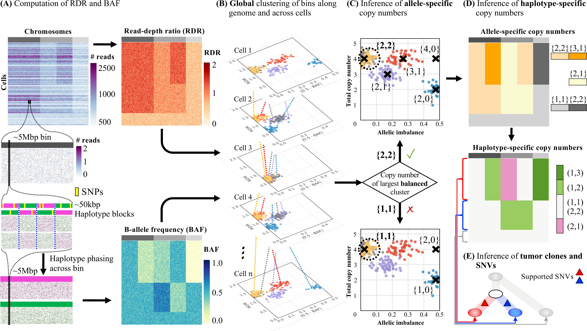

CHISEL¶
CHISEL is an algorithm to infer allele- and haplotype-specific copy numbers in individual cells from low-coverage single-cell DNA sequencing data. The full description of the algorithm and its application on published cancer datasets are described in
Simone Zaccaria and Ben Raphael, Nature Biotechnology, 2021
The results of CHISEL on the published low-coverage single-cell DNA sequencing data of cancer patients and all the related analyses are available at
This repository includes detailed instructions for installation and requirements, demos with related tutorial of different CHISEL applications, a list of current issues, and contacts. The CHISEL repository is currently in a preliminary release and improved versions are released frequently. During this stage, please keep checking for updates.
Contents¶
Overview¶
Algorithm¶

The CHISEL algorithm. (A) CHISEL computes RDRs and BAFs in low-coverage (<0.05X per cell) single-cell DNA sequencing data (top left). Read counts from 2000 individual cells (rows) in 5Mb genomic bins (columns) across three chromosomes (grey rectangles in first row) are shown. For each bin in each cell, CHISEL computes the RDR (top) by normalizing the observed read counts. CHISEL computes the BAF in each bin and cell (bottom) by first performing referenced-based phasing of germline SNPs in 50kb haplotype blocks (magenta and green) and then phasing all these blocks jointly across all cells. (B) CHISEL clusters RDRs and BAFs globally along the genome and jointly across all cells resulting here in 5 clusters of genomic bins (red, blue, purple, yellow, and grey) with distinct copy-number states. (C) CHISEL infers a pair of allele-specific copy numbers for each cluster by determining whether the allele-specific copy numbers of the largest balanced (BAF~0.5) cluster are equal to {1, 1} (diploid), {2, 2} (tetraploid), or are higher ploidy. (D) CHISEL infers haplotype-specific copy numbers (a, b) by phasing the allele-specific copy numbers consistently across all cells. (E) CHISEL clusters tumor cells into clones according to their haplotype-specific copy numbers. Here, a diploid clone (light gray) and two tumor clones (red and blue) are obtained. A phylogenetic tree describes the evolution of these clones. Somatic single-nucleotide variants (SNVs) are derived from pseudo-bulk samples and placed on the branches of the tree.
Quick start¶
To get started quickly, you can install CHISEL and test the complete CHISEL pipeline on example data using the 4 following commands.
git clone https://github.com/raphael-group/chisel && cd chisel # Clone CHISEL and enters the directory
bash install_full.sh # Run the automatic installation, which installs conda and CHISEL on it
source conda/bin/activate chisel # Activate CHISEL, remember to run this command before every new session of CHISEL
cd demos/complete/ && bash demo-complete.sh # Enter the directory of the complete demo and run it
A successful execution of these commands will generate the final plots of the demo as PNG images in chisel/demos/complete/plots/, the inferred allele- and haplotype-specific copy numbers in chisel/demos/complete/calls/calls.tsv, and the clones in chisel/demos/complete/clones/mapping.tsv. Further details of the temporary files and final outputs are described here.
Setup¶
CHISEL is distributed as a bioconda package, and can be installed either from conda or directly from source.
Depending on your interest in using conda, there are three possible installation approaches for CHISEL.
- Full automatic installation: creates a new conda installation with Miniconda and installs CHISEL on it;
- Standard installation: uses an existing conda installation and installs CHISEL on it;
- Custom installation: installs CHISEL from source without conda.
Additional notes and comments are reported at the end of this section.
Full automatic installation¶
An automatic BASH script that fully installs conda through Miniconda and installs chisel on it is provided in install_full.sh. Simply run the following command from the CHISEL’s home ${CHISEL_HOME}.
bash install_full.sh
Note that this procedures installs conda in ${CHISEL_HOME}/conda and the following command (output at the end of the installation) must be executed before using chisel in every new session:
source ${CHISEL_HOME}/conda/bin/activate chisel
Standard installation¶
CHISEL can be installed using an existing installation of conda (e.g. either the compact Miniconda or the complete Anaconda) in two steps.
First, bioconda requires to set the following channels in this exact order:
conda config --add channels defaults
conda config --add channels bioconda
conda config --add channels conda-forge
Next, chisel can be installed with the following one-time command:
conda install chisel
This command installs chisel in the base conda environment, however best practices generally recommend, especially in computing servers, to keep distinct packages independent.
Therefore, it is preferable to use the following command to install chisel:
conda create -n chisel chisel
In this case, chisel must be activated before every session with the following command
source activate chisel
Note that all the conda and activate commands above are located in ${CONDA_HOME}/bin/.
Custom installation¶
CHISEL is written in python2.7 and requires few standard python packages and two additional standard tools.
Once all the requirements have been successfully installed, chisel can be manually installed from ${CHISEL_HOME} as
python setup.py install
> Python packages¶
CHISEL depends on the following standard python packages, which must be available in the python environment where the user runs CHISEL.
| Package | Tested version | Comments |
|---|---|---|
| numpy | 1.16.1 | Efficient scientific computations |
| scipy | 1.2.1 | Efficient mathematical functions and methods |
| pandas | 0.20.1 | Dataframe management |
| matplotlib | 2.0.2 | Basic plotting utilities |
| seaborn | 0.7.1 | Advanced plotting utilities |
> Additional software¶
CHISEL also requires few standard additional tools, which must be included in PATH (e.g. by executing export PATH=${SAMTOOLS_HOME}/bin/:${PATH})
| Software | Tested version | Comments |
|---|---|---|
| AWK | GNU Awk 4.0.2 | Scripting language available by default on most Unix-like OSs and with specific implementation available for any other OS |
| SAMtools and BCFtools | 1.9 | Suite of programs for interacting with high-throughput sequencing data |
Additional notes:¶
- To be to run the conda commands
condaandactivatewithout prefix, add their path full path toPATHby
export PATH=${CONDA_HOME}/bin/:${PATH}
biocondarequires does not support Windows; however, Windows uses can use either WSL or the custom installation.
Usage¶
Required data¶
CHISEL requires 4 input data:
- A single-cell barcoded BAM file containing aligned DNA sequencing reads from single cells of a single patient in the
CB:Z:-barcoded format. CHISEL includes a commandchisel_prepto automatically generate such barcoded BAM file (aligned and sorted) starting from standard formats for single-cell DNA sequencing data, including single-cell FASTQs, single-cell BAMs, etc. The barcoded BAM file must be indexed and sorted (see SAMtools and GATK Best Practices). In a barcoded BAM file, reads must be labelled by a barcode, which is a string or substringPREFIX:[A,C,G,T]+composed of two parts: (1) a prefixPREFIX; and (2) the actual barcode[A,C,G,T]+which is an arbitrary-long string of lettersA,C,G,Tuniquely identifiying a single cell. Current CHISEL implementation requires thePREFIXto beCB:Z:according to the 10X Genomics format. Note that the barcodePREFIX:[A,C,G,T]+can be either an independent tab-separated field of the SAM alignments or can be incorporated in the name of the sequencing reads. - The reference human genome used to align the sequencing reads in the single-cell barcoded BAM. The most-used human reference genome are available at GRC or UCSC. Moreover, the reference genome
${REF}.famust be index by SAMtools (i.e.samtools faidx ${REF}.fa) and a dictionary must be created (i.e. samtools dict ${REF}.fa > ${REF}.dict) in the same folder as${REF}. - A matched-normal BAM file containing sequencing reads from a matched-normal sample from the same patient. When this sample is not available, user can use the corresponding CHISEL command
chisel-pseudonormal.pyto form a pseudo matched-normal sample by extracting diploid normal cells. Note that this approach is successful only when normal diploid cells are present in the barcoded BAM file. - A VCF file with phased germline SNPs present in the matched-normal sample. CHISEL only requires a VCF with the phase
0|1or1|0within the record of heterozygous phased SNPs and any reference-based phasing method can be used. Here, we recommend a very easy two step procedure: (1) use BCFtools to call germline SNPs from the matched-normal sample (as described here); (2) use Eagle2 through the Michigan Imputation Server to phase germline SNPs with respect to the reference panel HRC. Alternatively, Eagle2 can be used locally, and other methods as SHAPEIT or other panels as 1000 Genomes Phase 3 can be applied, too. Note that HRC currently supports only referencehg19, therefore user can use LiftoverVcf from Picard tools or similar methods to convert genomic coordinates to the requiredhg19build, when a different reference genome has been used to align sequencing reads. Note that phased germline SNPs can be also provided inPOSformat, i.e. tab-separated dataframe with fieldCHROMOSOME POSITION PHASEwhere phase is either0|1or1|0.
System requirements¶
CHISEL is highly parallelized in order to make efficient the extensive computations needed for counting sequencing reads from BAM files, often splitting independent computations to parallel processes. We recommend executing CHISEL on multi-processing computing machines. The minimum system requirements that we have tested for running the demos or running every CHISEL command after BAM file processing are:
- CPU with at least 2 virtual cores
- 4GB of RAM
However, when the complete CHISEL pipeline is applied to huge BAM files (>200GB) for millions of germline SNPs across thousands of single cells, CHISEL requirements are limited by the existing requirements of SAMtools and BCFtools. We recommend a machine with larger RAM (>100GB of RAM) and a larger number of cores (e.g. >10 cores). In general, the higher the number of cores is with a sufficient amount of RAM, the faster the execution will be.
CHISEL Commands¶
CHISEL offers different commands to run either the entire pipeline with all the steps or only some specific steps. In particular, the latter commands are useful when user wants to re-run some specific steps by varying some of the default parameters or for quality control (see below). Every command can be run directly when CHISEL has been correctly installed.
| Command | Description | Required input | Output |
|---|---|---|---|
chisel |
Running the complete CHISEL pipeline | The 4 required input data | Final results and plots |
chisel-calling |
Running from the inference of copy numbers | Computed RDRs and BAFs | Final results and plots |
chisel-cloning |
Running from the identification of clones | Inferred copy numbers | Final results and plots |
chisel-plotting |
Running plot generation | Inferred copy numbers and clones | Final plots |
chisel-pseudonormal |
Extracting diploid cells to form a pseudo matched-normal sample | A barcoded BAM file containing diploid cells and the corresponding reference genome | A BAM file to be used as a matched-normal sample |
chisel_prep |
Generating a barcoded BAM | Single-cell FASTQs (or FASTQ.gz), single-cell BAMs, and RG:-barcoded BAM |
barcoded BAM file (see Required data) |
chisel_bedding |
Generating a BED file per cell with CHISEL results | CHISEL-inferred allele- and haplotype-specific copy numbers (e.g. calls.tvs file) |
A BED file per cell with CHROM START END HAP-COPY-NUMBERS |
Click on the name of each command to obtain a description of all the available parameters.
Demos¶
Each demo is an exemplary and guided execution of a CHISEL command on available data. The demos are meant to illustrate the complete CHISEL pipeline and the usage of each specific command. In particular, the specific commands allow the user to explore the results when varying the main parameters (without the need to re-execute the entire pipeline), allowing to deal with different features of distinct datasets and to obtain the best-quality results (see recommendations below). Each demo is simultaneously a guided description of the entire example and a BASH script which can be directly executed to run the complete demo. As such, the user can both read the guided description as a web page and run the same script to execute the demo. At this time the following demos are available (more demos will be available soon):
| Demo | Description |
|---|---|
| complete | Demo of the complete CHISEL pipeline |
| callingE | Demo of chisel-calling.py command to re-run pipeline from the inference of copy numbers on tumor section E of breast cancer patient S0 |
| cloningE | Demo of chisel-cloning.py command to re-run pipeline from the identification of clones on tumor section E of breast cancer patient S0 |
| plottingE | Demo of chisel-plotting.py command to re-run plot generation on tumor section E of breast cancer patient S0 |
| pseudonormal | Demo of chisel-pseudonormal.py command to generate a pseudo matched-normal sample by extracting diploid cells from a barcoded BAM file |
Recommendations and quality control¶
The following recommendations guide the user in the process of quality control for the final results. In order to deal with datasets with different features, these recommendations help the user in investigating solutions obtained with different parameters. In particular, some of these guides are especially helpful when analyzing datasets with non-standard features and with noisy or high-variance sequencing data, e.g. due to low number of cells, different sequencing coverages, low number of phased germline SNPs.
| Recommendation | Description |
|---|---|
| Ploidy selection | Adjusting model-selection parameters to accurately infer ploidy in noisy and high-variance datasets |
| Identification of clones | Interpreting the identified clones and explore alternative solutions |
| Global clustering | Interpreting the global clustering of RDRs and BAFs, and exploring alternative solutions |
Development¶
Recent and important updates¶
- [12-Jan-2021] Introducing two new CHISEL commands:
chisel_prepto generate input barcoded BAM file from standard formats, andchisel_beddingto generate BED files with CHISEL results. - [20-Jul-2020] CHISEL has been deposited and approved in Bioconda; check the new streamlined installation procedure.
- [22-Jan-2020] This version introduced two important updates:
- CHISEL now use the inferred clones to correct the inferred allele- and haplotype-specific copy numbers, removing noise and outlying errors. As such, CHISEL generates plots with both uncorrected and corrected copy numbers;
- CHISEL now has a sensitivity, which can be varied through the command
chisel-cloning.pyto enable the accurate inference of cell ploidy even in the case of noisy or high-variance data (e.g. low number of cells with low coverage).
- [20-Jan-2020] This version introduced the previously missing command
chisel-pseudonormal.py. This command can be used to extract sequencing reads from diploid cells to form a pseudo matched-normal sample, which is required by the full CHISEL pipeline. A corresponding demo has also been introduced.
Current issues¶
CHISEL is in active development, please report any issue or question as this could help the development and improvement of CHISEL. Known issues with current version are reported here below.
Contacts¶
CHISEL’s repository is actively maintained by Simone Zaccaria, previously a Postdoctoral Research Associate at Princeton University in the research group of prof. Ben Raphael and currently group leader of the Computational Cancer Genomics lab at the UCL Cancer Institute.